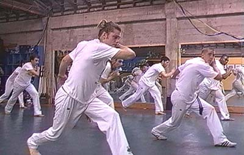

| ../ lodge |
Capoeira game / Salvador, Bahia, Brazil WEIGHT: THE FIRST MOTION FACTOR? Thoughts on Current Research in Dance By EDWARD LUNA Devoting an entire ten-week course to only one of Laban's four Motion Factors—Weight—may appear to be somewhat "reductive" at first. Indeed, many students (myself included) have struggled with the strict parameters set by instructor Vera Blaine and the Choreography I course that she has pioneered since the 1980s. However, such a seemingly narrow pedagogical approach may offer hidden rewards. Limiting one's attention to the matter of Weight should be of particular interest to most dancers, as it is arguably the most "embodied" of the four Motion Factors. Laban defines Weight as the "[m]uscular Energy or Force used in the resistance to weight" (i.e. gravity). In Maletic's reading of Laban's work (which also borrows from Jung),¹ Weight deals with sensing and intentionality. In contrast, the Motion Factor of Time is more often a question of intuition, decisionmaking, and rhythm; while Space is a question of thinking, attention, and orientation; and Flow is a question of feeling, and progression (using sequential or non-sequential movement). In Blaine's conception, Weight—and weight sensing—is crucial for dance performance. She describes watching dance programs across the country, in which many of the dancers are simply not "in their weight.," and merely making shapes in space. Laban might agree with this priority of Weight, as evidenced by his simple assertion that It is a mechanical fact that the weight of the body, or any of its parts, can be lifted and carried into a certain direction of space, and that this process takes a certain amount of time. . . . [t]he same. . . can also be observed in any counter-pull which regulates the flow of movement.² In this brief article, I will attempt to summarize a few of Blaine's concepts, with examples from my observation and/or participation in the class. I will also outline the relevance of these materials to my own area of research: the Brazilian dance-fight-game known as capoeira. THE THREE WEIGHT QUALITIES Resiliency In Laban¹s scheme, resiliency is not classified as a distinct Effort Element of Weight, but rather as a type of phrasing that alternates between Strength and Lightness. Strength is defined as that which resists and goes against the pull of gravity, while Lightness is that which refines and adjusts to gravity (Laban also uses the useful terms Resistance and Levity).³ Resiliency is therefore a way of moving between these two extremes. The resiliency that Blaine imparts on her students is of a slightly different kind. In class exercises, she asks students to drop the weight on the body, all the way down to "the bottom." Having reached this bottom, the body must re-engage to come up, finding a moment of levity (or "overcurve") before coming back down. For many students, this immediately translates to a kind of "bounciness." However, Blaine appears to prefer a more subtle and complex kind of movement. In this, Blaine is combining aspects of all three types of resiliency, defined by Maletic and others as buoyant, weighted, and elastic.&sup4; Buoyant resiliency might appear like a basketball being bounced off the ground quickly and strongly, going high in the air and hanging for a moment, before falling back down. Weighted resiliency might be that same basketball as its bounces decrease in size and eventually give into gravity. Elastic resiliency is the ball being dribbled constantly and evenly by a player. In outlining her choreographic approach, Blaine uses all three types to encourage her students to find their own developments and contrasts. There are sections for raveling, floor, aerial, and minimal uses of resiliency, each of which may demand different approaches. For example, buoyant resiliency may be more appropriate for leaving the ground. Weighted resiliency may be better suited for floor or minimal material. Elastic resiliency may be suitable for traveling. Resiliency (especially of the elastic kind) is often given over to repetition, which often serves to "obscure choreographic difference," as Blaine says. It also has an affinity with symmetry and alternation, which again is predictable. As a suggestion, Blaine asks her students to insert some temporal or spatial surprises into such predictable patterns. Resiliency also resides in the vertical plane, living in a constant up-down dimension. Blaine also emphasizes the importance of connecting to the center of weight, which is below the navel. Finding one's deep plié, and being able to reengage the weight from that lowered position, are perhaps the keys to mastering resilient movement. Strength The Effort Element of Strength is defined in Laban¹s terms as going against the pull of gravity. It is stressed, tense, and firm.&sup5; Maletic uses the words "solid" and "forceful."&sup6; While none of these imply directionality, one example by Cecily Dell begins to suggest that it may exist in the horizontal plane: If you have a heavy object to move, a heavy carton or piece of furniture, you may have to engage your weight using a forceful quality. If you lean against the object, giving in to your body weight, the object may not budge. Probably you will have to get behind your weight and really push.&sup7; Blaine uses this kind of imagery as a point of departure for her own conception of Strength, in which the body pushes out and through gravity, very resolutely in the horizontal plane. Laban himself makes little mention of this horizontality, and in fact links Strength with jumping. He also discusses Strength in terms of weightiness, or being heavy, which implies a vertical axis.&sup8; But from a pedagogical point of view, it provides an excellent counterpoint to the vertical nature of resiliency. Where resiliency is a constant giving in and renewing of weight, lending it a rubbery, more Indirect feel, Strength is often very grounded and direct. Blaine likes to emphasize oppositional pull, or a sense that if a movement is thrusting forward, then it is also being pulled by an equal and opposite force going backwards. In Strength, the body is always centered on and reinitiating from the center of weight, and there are no half-measures. Every step must be engaged (not necessarily "tense"), and the dancer should never step under the body, but rather always out, :"going somewhere" with the weight. Even the aerial section is not so much "up in the air" as it is out through the space. Strength also lends itself to impactful movements and gestures, which must come from the center, not the periphery. One significant variation is called "free strength" which is very Indirect, almost like flailing. Lightness Laban defines Lightness as delicacy and refinement of weight. In terms of the course, it "lives at the top² of resiliency. In this, it closely resembles the port de bras of ballet, with its "indulgent," refined quality of movement. Blaine refers to "processing" of the weight, which resides in the vertical. The weight of the body does not give in to gravity, in this case, but rather delicately ramifies it, pulling out suspensions at the top of the movement. In another contrast to resiliency, there is less emphasis on the center of gravity, and more on the "center of levity," near the sternum. As Dell notes, "Activation in the chest, sternum, ribs, and upper back with the support from the lower trunk, provide optimum conditions for producing lightness."&sup9; Lightness lends itself to swing-like movements, very similar to buoyant resiliency. It also lends itself to movements that rise and use the feet carefully in relevé, sequencing through the body as it processes the weight. To avoid binding the weight, Blaine reminds her students not to "perch" above oneself, carefully balanced, but rather to allow the body to fall off balance in order to sense the weight and reinitialize its refinement. One different variation is called "quick light." In this kind of Lightness, the dancer uses movements that Laban would describe as "flicking"; or "fluttering," "flapping," and "whisking." One helpful image is of walking over hot coals. SOME OVERALL IMPLICATIONS The class presents quite a challenge to some dancers, who may be used to moving in a certain way. By honing in on some of these habits, dancers are offered an opportunity to begin to identify their own tendencies. With some reflection, dancers may then challenge themselves to change their movements appropriately. Even if the lessons learned in the class are ultimately discarded, each dancer will have begun to develop a vocabulary for describing movement that is not merely spatial, but addresses the factor of Weight. This is of great use not only to the dancer, but also the the choreographer looking for something more specific in a dancer. It also begins to elaborate a knowledge of phrasing, which will be further developed by other classes. IMPLICATIONS FOR MY RESEARCH My own research is twofold. Firstly, I consider myself a choreographer and mover, so the tools provided by this class are invaluable for the embodiment and transmission of movement. Secondly, I am currently engaged in a deep investigation of the Afro-Brazilian dance-fight-game known as capoeira. It is to this second area of research that I will now turn my attention. Capoeira is a notoriously heterogeneous field, as is appropriate for a form that arrived in Brazil thanks to the institution of slavery, developed in a slave context, was repressed, and survived into the 20th century only to be modernized, stylized, and "whitened." As such, it is difficult to make generalizations about the form. Nevertheless, I will note here some observations in my own learning, and teaching of the form. Capoeira angola / Mestre Pastinha and student, ca. 1960s Capoeira Angola In the more traditional style of capoeira angola, movers frequently appear to use a kind of elastic resiliency to surprise their opponents. This appearance of bounciness, where the weight is constantly shifting, is deceptive not only for the opponent, but also for the academic observer. This supposed elasticity, when closer examined, is actually closer to passive, pedestrian weight (what Dell calls "heaviness"), or even weighted resiliency. A key concept in capoeira, malícia (or "treachery"), helps us understand this deception. Use of passive/elastic weight is a common feature of many African-American dances. In capoeira, this translates to a loose, resilient, and flexible bodily attitude that is nevertheless rooted to the earth, weighted and fully aware of where its weight is. Without that awareness, a capoeira angola player would easily be tripped. In other words, the body is oriented to the vertical axis, always "under itself," even when low to the ground, or inverted, with hands on the ground. The appearance of resiliency also offers the practitioner immediate access to qualities of Strength and Lightness. Resiliency lends itself to unpredictable shifts of weight from one foot to another; so if one player cannot identify precisely where the other has committed the weight of the body, the origin of a surprise attack will be much more difficult to "read." This is a huge advantage for an attacker. The use of resilient phrasing is also useful in two other extremes: following through on the attack (as in a real fight), as well as holding back the attack (as in training, or a friendly match). When originating in resiliency, a Sudden, Strong, attack may be particularly surprising and devastating, because it is not "broadcast" as clearly as a Strong, Direct attack would be from a neutral body position. Moreover, the upward momentum of recovery in resiliency may be honed in to the horizontality of Strength. On the other hand, when it is necessary to hold back an attack, resiliency is drawn out at the "top" (or periphery of the movement) and softened and controlled into a kind of Bound Lightness that avoids impact.  Capoeira regional stance / School of Mestre Acordeon, Berkeley, CA Capoeira Regional In the more martial style of copier regional, Weight is markedly different. Here, the mover appears to be using Strength, not resiliency, to move through space. The mover rarely steps ³under² her/himself, and instead usually steps quite far away from the center of weight. This makes the mover more unbalanced and vulnerable to takedowns, but it also provides the attacks with far more power and speed. It also allows more aerial movements to occur, including death-defying acrobatics. In capoeira regional, many movers actually use some elastic resiliency, bouncing rhythmically with the legs as they move from side to side and back to front (see photo above). In this sense, the feet of the regional player share some of the elastic resiliency of a boxer's feet, for example. However, the regional player's legs are far more rhythmic and predictable in their placement, which makes them vulnerable to attacks that interrupt this rhythm. This is a weakness well understood by longtime practitioners, who adapt some of the unpredictability of angola into their own games, but I have often witnessed beginning and intermediate students so determined to stay "in rhythm" that they were incredibly predictable and therefore vulnerable to surprise. In contrast, the feet of the angola player are rarely far from the center of weight, are are far less predictable. They are also more generally weighted, almost "neutral," which is suitable for their supposed attitude of ambivalence. For the angola player, the notion of "pretending to cooperate" while being ready to attack, is a high art developed from years of learning to cope with slavery. Regional, on the other hand, is taught less as an African cultural form and more as a Brazilian martial art. Its use of the quality of Weight would seem to conform to this generalization. Photographic evidence These tendencies may be seen clearly in the photograph that heads this article. The older gentleman on the left appears more balanced, centered, and in relatively passive weight. The younger man doing the cartwheel is exposing his belly, and very much projecting his weight through the horizontal plane. I shall leave it up to the intelligent reader to determine which of these is in a safer position (!). As noted in the regional photo above, the stance is very wide, and clearly has a strong spatial intention. From this position, attacks may be executed with great ferocity and speed (imagine how powerfully one go those back legs could kick), but they risk being unbalanced. Notice too, how all the students are performing the movement at the same time, which is more uncommon in the angola schools. By contrast, note how in the angola photograph the players appear clearly balanced. The older gentleman executing the kick on the left may seem to be in a precarious position, but upon closer examination, the leg is very clearly planted under him. Meanwhile, the student below has executed a proper defense by going back and away from the attack, while still very much balanced over himself, on his hands. These are only preliminary findings, but they indicate some of the interesting implications of a detailed study of the Weight Factor (and all the other Factors: Time, Space, Flow) in my own work. NOTES 1 Maletic, Vera. Dance Dynamics: Effort and Phrasing. Workbook, Dance 605, The Ohio State University, 2002. p 13. 2 Laban, Rudolf. The Mastery of Movement, 2nd Ed. MacDonald & Evans. London. p 23. 3 ibid. p 82. 4 Maletic. p 95. 5 Laban. p 78. 6 Maletic. p 19. 7 Dell, Cecily. A Primer for Movement Description. Dance Notation Bureau, Inc. 1970. (Class Handout) 8 Laban. p 78. 9 Dell. |